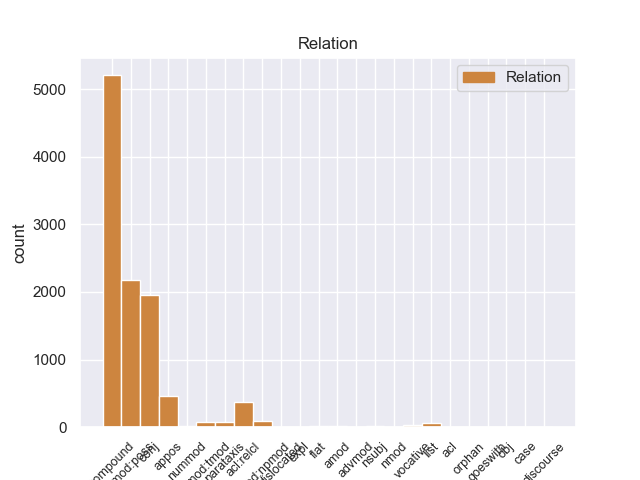
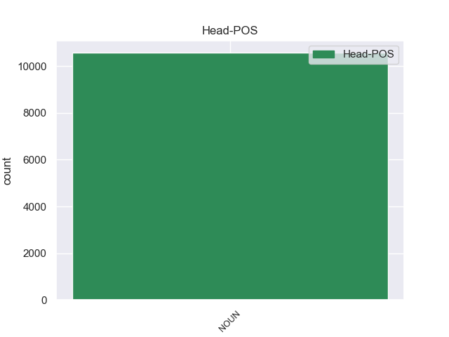
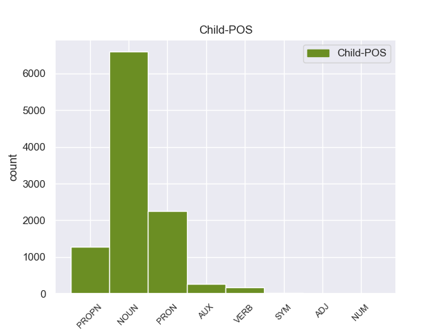

Distribution of features within this leaf



Agreement Rules sorted by frequency.
When the head token is NOUN and the dependent token is NOUN.
1 Of _ _ _ _ 0 _ _ _
2 course _ _ _ _ 0 _ _ _
3 , _ _ _ _ 0 _ _ _
4 they _ _ _ _ 0 _ _ _
5 could _ _ _ _ 0 _ _ _
6 n't _ _ _ _ 0 _ _ _
7 call _ _ _ _ 0 _ _ _
8 him _ _ _ _ 0 _ _ _
9 either _ _ _ _ 0 _ _ _
10 to _ _ _ _ 0 _ _ _
11 ask _ _ _ _ 0 _ _ _
12 about _ _ _ _ 0 _ _ _
13 it _ _ _ _ 0 _ _ _
14 because _ _ _ _ 0 _ _ _
15 apparently _ _ _ _ 0 _ _ _
16 they _ _ _ _ 0 _ _ _
17 do _ _ _ _ 0 _ _ _
18 n't _ _ _ _ 0 _ _ _
19 keep _ _ _ _ 0 _ _ _
20 their _ _ _ _ 0 _ _ _
21 employees _ _ _ _ 0 _ _ _
22 ' _ _ _ _ 0 _ _ _
23 phone _ _ _ _ 0 _ _ _
24 numbers _ _ _ _ 0 _ _ _
25 ( _ _ _ _ 0 _ _ _
26 riiight _ _ _ _ 0 _ _ _
27 ) _ _ _ _ 0 _ _ _
28 , _ _ _ _ 0 _ _ _
29 so _ _ _ _ 0 _ _ _
30 I _ _ _ _ 0 _ _ _
31 would _ _ _ _ 0 _ _ _
32 have _ _ _ _ 0 _ _ _
33 to _ _ _ _ 0 _ _ _
34 return _ _ _ _ 0 _ _ _
35 on _ _ _ _ 0 _ _ _
36 Monday _ _ _ _ 0 _ _ _
37 ( _ _ _ _ 0 _ _ _
38 driving _ _ _ _ 0 _ _ _
39 for _ _ _ _ 0 _ _ _
40 3 _ _ _ _ 0 _ _ _
41 days _ _ _ _ 0 _ _ _
42 now _ _ _ _ 0 _ _ _
43 with _ _ _ _ 0 _ _ _
44 no _ _ _ _ 0 _ _ _
45 wheel wheel NOUN NN Number=Sing 46 compound 46:compound _
46 lock lock NOUN NN Number=Sing 0 _ _ _
47 should _ _ _ _ 0 _ _ _
48 I _ _ _ _ 0 _ _ _
49 get _ _ _ _ 0 _ _ _
50 a _ _ _ _ 0 _ _ _
51 flat _ _ _ _ 0 _ _ _
52 ) _ _ _ _ 0 _ _ _
53 . _ _ _ _ 0 _ _ _
When the head token is NOUN and the dependent token is PRON.
1 I _ _ _ _ 0 _ _ _
2 will _ _ _ _ 0 _ _ _
3 never _ _ _ _ 0 _ _ _
4 return _ _ _ _ 0 _ _ _
5 there _ _ _ _ 0 _ _ _
6 again _ _ _ _ 0 _ _ _
7 ( _ _ _ _ 0 _ _ _
8 and _ _ _ _ 0 _ _ _
9 now _ _ _ _ 0 _ _ _
10 have _ _ _ _ 0 _ _ _
11 some _ _ _ _ 0 _ _ _
12 serious _ _ _ _ 0 _ _ _
13 doubts _ _ _ _ 0 _ _ _
14 about _ _ _ _ 0 _ _ _
15 the _ _ _ _ 0 _ _ _
16 quality _ _ _ _ 0 _ _ _
17 of _ _ _ _ 0 _ _ _
18 work _ _ _ _ 0 _ _ _
19 they _ _ _ _ 0 _ _ _
20 actually _ _ _ _ 0 _ _ _
21 performed _ _ _ _ 0 _ _ _
22 on _ _ _ _ 0 _ _ _
23 my my PRON PRP$ Number=Sing|Person=1|Poss=Yes|PronType=Prs 24 nmod:poss 24:nmod:poss _
24 car car NOUN NN Number=Sing 0 _ _ _
25 ) _ _ _ _ 0 _ _ _
26 . _ _ _ _ 0 _ _ _
When the head token is NOUN and the dependent token is PROPN.
1 After _ _ _ _ 0 _ _ _
2 happily _ _ _ _ 0 _ _ _
3 visiting _ _ _ _ 0 _ _ _
4 Sear's _ _ _ _ 0 _ _ _
5 Automotives _ _ _ _ 0 _ _ _
6 in _ _ _ _ 0 _ _ _
7 the _ _ _ _ 0 _ _ _
8 past _ _ _ _ 0 _ _ _
9 , _ _ _ _ 0 _ _ _
10 I _ _ _ _ 0 _ _ _
11 was _ _ _ _ 0 _ _ _
12 shocked _ _ _ _ 0 _ _ _
13 at _ _ _ _ 0 _ _ _
14 the _ _ _ _ 0 _ _ _
15 horrible _ _ _ _ 0 _ _ _
16 service _ _ _ _ 0 _ _ _
17 received _ _ _ _ 0 _ _ _
18 at _ _ _ _ 0 _ _ _
19 their _ _ _ _ 0 _ _ _
20 Greensboro Greensboro PROPN NNP Number=Sing 21 compound 21:compound _
21 location location NOUN NN Number=Sing 0 _ _ _
22 . _ _ _ _ 0 _ _ _
When the head token is NOUN and the dependent token is AUX.
1 Unless _ _ _ _ 0 _ _ _
2 you _ _ _ _ 0 _ _ _
3 want _ _ _ _ 0 _ _ _
4 to _ _ _ _ 0 _ _ _
5 take _ _ _ _ 0 _ _ _
6 the _ _ _ _ 0 _ _ _
7 " _ _ _ _ 0 _ _ _
8 tell _ _ _ _ 0 _ _ _
9 the _ _ _ _ 0 _ _ _
10 customer _ _ _ _ 0 _ _ _
11 how _ _ _ _ 0 _ _ _
12 wrong _ _ _ _ 0 _ _ _
13 she _ _ _ _ 0 _ _ _
14 is _ _ _ _ 0 _ _ _
15 and _ _ _ _ 0 _ _ _
16 try _ _ _ _ 0 _ _ _
17 and _ _ _ _ 0 _ _ _
18 force _ _ _ _ 0 _ _ _
19 her _ _ _ _ 0 _ _ _
20 into _ _ _ _ 0 _ _ _
21 a _ _ _ _ 0 _ _ _
22 dress dress NOUN NN Number=Sing 0 _ _ _
23 she _ _ _ _ 0 _ _ _
24 's be AUX VBZ Mood=Ind|Number=Sing|Person=3|Tense=Pres|VerbForm=Fin 22 acl:relcl 27:aux _
25 obviously _ _ _ _ 0 _ _ _
26 not _ _ _ _ 0 _ _ _
27 loving _ _ _ _ 0 _ _ _
28 " _ _ _ _ 0 _ _ _
29 approach _ _ _ _ 0 _ _ _
30 which _ _ _ _ 0 _ _ _
31 will _ _ _ _ 0 _ _ _
32 likely _ _ _ _ 0 _ _ _
33 get _ _ _ _ 0 _ _ _
34 you _ _ _ _ 0 _ _ _
35 ... _ _ _ _ 0 _ _ _
36 uh _ _ _ _ 0 _ _ _
37 ... _ _ _ _ 0 _ _ _
38 nowhere _ _ _ _ 0 _ _ _
39 . _ _ _ _ 0 _ _ _
When the head token is NOUN and the dependent token is VERB.
1 But _ _ _ _ 0 _ _ _
2 one _ _ _ _ 0 _ _ _
3 should _ _ _ _ 0 _ _ _
4 not _ _ _ _ 0 _ _ _
5 go _ _ _ _ 0 _ _ _
6 here _ _ _ _ 0 _ _ _
7 expecting _ _ _ _ 0 _ _ _
8 something _ _ _ _ 0 _ _ _
9 fantastic _ _ _ _ 0 _ _ _
10 , _ _ _ _ 0 _ _ _
11 unless _ _ _ _ 0 _ _ _
12 perhaps _ _ _ _ 0 _ _ _
13 you _ _ _ _ 0 _ _ _
14 've _ _ _ _ 0 _ _ _
15 never _ _ _ _ 0 _ _ _
16 had _ _ _ _ 0 _ _ _
17 middle _ _ _ _ 0 _ _ _
18 - _ _ _ _ 0 _ _ _
19 eastern _ _ _ _ 0 _ _ _
20 food _ _ _ _ 0 _ _ _
21 before _ _ _ _ 0 _ _ _
22 , _ _ _ _ 0 _ _ _
23 or _ _ _ _ 0 _ _ _
24 succulent _ _ _ _ 0 _ _ _
25 duck duck NOUN NN Number=Sing 0 _ _ _
26 , _ _ _ _ 0 _ _ _
27 tasty _ _ _ _ 0 _ _ _
28 lamb _ _ _ _ 0 _ _ _
29 , _ _ _ _ 0 _ _ _
30 decent _ _ _ _ 0 _ _ _
31 portion _ _ _ _ 0 _ _ _
32 sizes size VERB VBZ Mood=Ind|Number=Sing|Person=3|Tense=Pres|VerbForm=Fin 25 conj 25:conj _
33 or _ _ _ _ 0 _ _ _
34 actually _ _ _ _ 0 _ _ _
35 warm _ _ _ _ 0 _ _ _
36 chocolate _ _ _ _ 0 _ _ _
37 desserts _ _ _ _ 0 _ _ _
38 . _ _ _ _ 0 _ _ _
When the head token is NOUN and the dependent token is SYM.
1 I _ _ _ _ 0 _ _ _
2 experienced _ _ _ _ 0 _ _ _
3 a _ _ _ _ 0 _ _ _
4 Definite _ _ _ _ 0 _ _ _
5 Decrease decrease NOUN NN Number=Sing 0 _ _ _
6 in _ _ _ _ 0 _ _ _
7 food _ _ _ _ 0 _ _ _
8 craving _ _ _ _ 0 _ _ _
9 ( _ _ _ _ 0 _ _ _
10 about _ _ _ _ 0 _ _ _
11 50 _ _ _ _ 0 _ _ _
12 % % SYM NN Number=Sing 5 appos 5:appos SpaceAfter=No
13 ) _ _ _ _ 0 _ _ _
14 and _ _ _ _ 0 _ _ _
15 decrease _ _ _ _ 0 _ _ _
16 in _ _ _ _ 0 _ _ _
17 stress _ _ _ _ 0 _ _ _
18 after _ _ _ _ 0 _ _ _
19 the _ _ _ _ 0 _ _ _
20 1st _ _ _ _ 0 _ _ _
21 treatment _ _ _ _ 0 _ _ _
22 . _ _ _ _ 0 _ _ _
When the head token is NOUN and the dependent token is ADJ.
1 Sam _ _ _ _ 0 _ _ _
2 , _ _ _ _ 0 _ _ _
3 please _ _ _ _ 0 _ _ _
4 confirm _ _ _ _ 0 _ _ _
5 , _ _ _ _ 0 _ _ _
6 Global Global ADJ NNP Number=Sing 7 compound 7:compound _
7 Counterparty Counterparty NOUN NNP Number=Sing 0 _ _ _
8 also _ _ _ _ 0 _ _ _
9 provides _ _ _ _ 0 _ _ _
10 the _ _ _ _ 0 _ _ _
11 links _ _ _ _ 0 _ _ _
12 to _ _ _ _ 0 _ _ _
13 establish _ _ _ _ 0 _ _ _
14 correlation _ _ _ _ 0 _ _ _
15 between _ _ _ _ 0 _ _ _
16 the _ _ _ _ 0 _ _ _
17 parent _ _ _ _ 0 _ _ _
18 and _ _ _ _ 0 _ _ _
19 child _ _ _ _ 0 _ _ _
20 for _ _ _ _ 0 _ _ _
21 our _ _ _ _ 0 _ _ _
22 downstream _ _ _ _ 0 _ _ _
23 systems _ _ _ _ 0 _ _ _
24 . _ _ _ _ 0 _ _ _
When the head token is NOUN and the dependent token is NUM.
1 $ _ _ _ _ 0 _ _ _
2 3 _ _ _ _ 0 _ _ _
3 m _ _ _ _ 0 _ _ _
4 - _ _ _ _ 0 _ _ _
5 Amount _ _ _ _ 0 _ _ _
6 the _ _ _ _ 0 _ _ _
7 White _ _ _ _ 0 _ _ _
8 House _ _ _ _ 0 _ _ _
9 was _ _ _ _ 0 _ _ _
10 willing _ _ _ _ 0 _ _ _
11 to _ _ _ _ 0 _ _ _
12 grant _ _ _ _ 0 _ _ _
13 the _ _ _ _ 0 _ _ _
14 9/11 9/11 NUM NN Number=Sing 15 compound 15:compound _
15 Commission commission NOUN NN Number=Sing 0 _ _ _
16 to _ _ _ _ 0 _ _ _
17 investigate _ _ _ _ 0 _ _ _
18 the _ _ _ _ 0 _ _ _
19 11 _ _ _ _ 0 _ _ _
20 September _ _ _ _ 0 _ _ _
21 attacks _ _ _ _ 0 _ _ _
22 . _ _ _ _ 0 _ _ _
Disagree Examples:
1 You _ _ _ _ 0 _ _ _
2 wonder _ _ _ _ 0 _ _ _
3 if _ _ _ _ 0 _ _ _
4 he _ _ _ _ 0 _ _ _
5 was _ _ _ _ 0 _ _ _
6 manipulating _ _ _ _ 0 _ _ _
7 the _ _ _ _ 0 _ _ _
8 market _ _ _ _ 0 _ _ _
9 with _ _ _ _ 0 _ _ _
10 his he PRON PRP$ Gender=Masc|Number=Sing|Person=3|Poss=Yes|PronType=Prs 12 nmod:poss 12:nmod:poss _
11 bombing _ _ _ _ 0 _ _ _
12 targets target NOUN NNS Number=Plur 0 _ _ _
13 . _ _ _ _ 0 _ _ _
1 You _ _ _ _ 0 _ _ _
2 wonder _ _ _ _ 0 _ _ _
3 if _ _ _ _ 0 _ _ _
4 he _ _ _ _ 0 _ _ _
5 was _ _ _ _ 0 _ _ _
6 manipulating _ _ _ _ 0 _ _ _
7 the _ _ _ _ 0 _ _ _
8 market _ _ _ _ 0 _ _ _
9 with _ _ _ _ 0 _ _ _
10 his _ _ _ _ 0 _ _ _
11 bombing bombing NOUN NN Number=Sing 12 compound 12:compound _
12 targets target NOUN NNS Number=Plur 0 _ _ _
13 . _ _ _ _ 0 _ _ _
1 The _ _ _ _ 0 _ _ _
2 cells _ _ _ _ 0 _ _ _
3 were _ _ _ _ 0 _ _ _
4 operating _ _ _ _ 0 _ _ _
5 in _ _ _ _ 0 _ _ _
6 the _ _ _ _ 0 _ _ _
7 Ghazaliyah Ghazaliyah PROPN NNP Number=Sing 12 compound 12:compound _
8 and _ _ _ _ 0 _ _ _
9 al _ _ _ _ 0 _ _ _
10 - _ _ _ _ 0 _ _ _
11 Jihad _ _ _ _ 0 _ _ _
12 districts district NOUN NNS Number=Plur 0 _ _ _
13 of _ _ _ _ 0 _ _ _
14 the _ _ _ _ 0 _ _ _
15 capital _ _ _ _ 0 _ _ _
16 . _ _ _ _ 0 _ _ _
1 Although _ _ _ _ 0 _ _ _
2 the _ _ _ _ 0 _ _ _
3 announcement _ _ _ _ 0 _ _ _
4 was _ _ _ _ 0 _ _ _
5 probably _ _ _ _ 0 _ _ _
6 made _ _ _ _ 0 _ _ _
7 to _ _ _ _ 0 _ _ _
8 show _ _ _ _ 0 _ _ _
9 progress _ _ _ _ 0 _ _ _
10 in _ _ _ _ 0 _ _ _
11 identifying _ _ _ _ 0 _ _ _
12 and _ _ _ _ 0 _ _ _
13 breaking _ _ _ _ 0 _ _ _
14 up _ _ _ _ 0 _ _ _
15 terror terror NOUN NN Number=Sing 16 compound 16:compound _
16 cells cell NOUN NNS Number=Plur 0 _ _ _
17 , _ _ _ _ 0 _ _ _
18 I _ _ _ _ 0 _ _ _
19 do _ _ _ _ 0 _ _ _
20 n't _ _ _ _ 0 _ _ _
21 find _ _ _ _ 0 _ _ _
22 the _ _ _ _ 0 _ _ _
23 news _ _ _ _ 0 _ _ _
24 that _ _ _ _ 0 _ _ _
25 the _ _ _ _ 0 _ _ _
26 Baathists _ _ _ _ 0 _ _ _
27 continue _ _ _ _ 0 _ _ _
28 to _ _ _ _ 0 _ _ _
29 penetrate _ _ _ _ 0 _ _ _
30 the _ _ _ _ 0 _ _ _
31 Iraqi _ _ _ _ 0 _ _ _
32 government _ _ _ _ 0 _ _ _
33 very _ _ _ _ 0 _ _ _
34 hopeful _ _ _ _ 0 _ _ _
35 . _ _ _ _ 0 _ _ _
1 It _ _ _ _ 0 _ _ _
2 reminds _ _ _ _ 0 _ _ _
3 me _ _ _ _ 0 _ _ _
4 too _ _ _ _ 0 _ _ _
5 much _ _ _ _ 0 _ _ _
6 of _ _ _ _ 0 _ _ _
7 the _ _ _ _ 0 _ _ _
8 ARVN ARVN PROPN NNP Number=Sing 9 compound 9:compound _
9 officers officer NOUN NNS Number=Plur 0 _ _ _
10 who _ _ _ _ 0 _ _ _
11 were _ _ _ _ 0 _ _ _
12 secretly _ _ _ _ 0 _ _ _
13 working _ _ _ _ 0 _ _ _
14 for _ _ _ _ 0 _ _ _
15 the _ _ _ _ 0 _ _ _
16 other _ _ _ _ 0 _ _ _
17 side _ _ _ _ 0 _ _ _
18 in _ _ _ _ 0 _ _ _
19 Vietnam _ _ _ _ 0 _ _ _
20 . _ _ _ _ 0 _ _ _